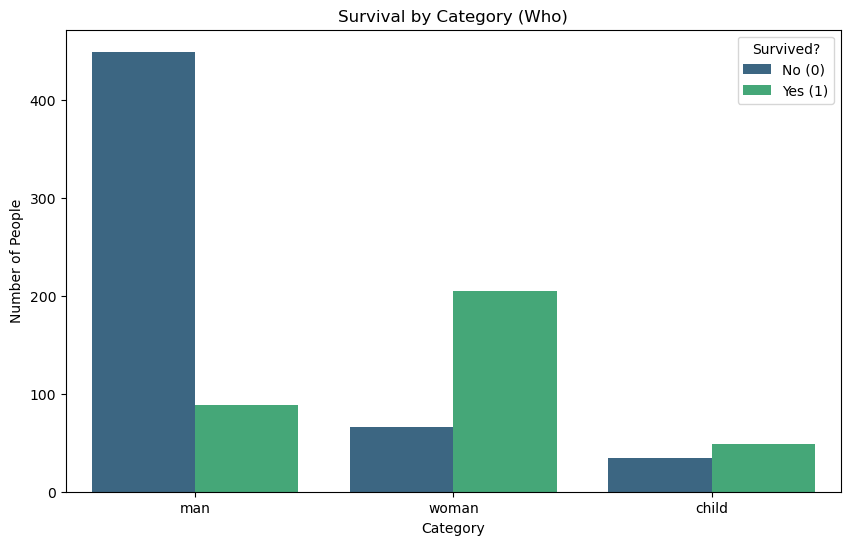

Sobrevivência no Titanic — Comparação de 4 Algoritmos
Titanic Dataset — EDA, engenharia de variáveis e Decision Tree, Regressão Logística, SVM e KNN lado a lado
Classificação
Diagnóstico de modelo
Problema
Prever se um passageiro sobreviveu ao naufrágio a partir de dados cadastrais — o clássico da classificação binária, aqui usado pra comparar 4 algoritmos diferentes no mesmo pipeline de dados.
Abordagem
Tratamento de nulos (idade pela média por classe, embarque pela moda), engenharia de variáveis (faixas de idade/tarifa, tamanho de família a partir de irmãos+pais a bordo) e treino de 4 modelos com o mesmo split, comparando não só acurácia como precisão e recall de cada um.
Trecho de código
resultados = pd.DataFrame([
treinar_e_avaliar(DecisionTreeClassifier(...), 'Decision Tree'),
treinar_e_avaliar(LogisticRegression(...), 'Logistic Regression'),
treinar_e_avaliar(SVC(...), 'SVM'),
treinar_e_avaliar(KNeighborsClassifier(...), 'KNN'),
])
# os 4 empatam em acurácia (82,5%-83,4%)
# mas KNN tem o maior recall e a menor precisãoVisualização

Resultado
Os 4 modelos empatam tecnicamente (82,5%–83,4% de acurácia) — depois de um bom
trabalho de feature engineering, o algoritmo importa menos que as variáveis
escolhidas. Achado extra: tamanho de família não é monotônico —
família pequena sobrevive mais que viajar sozinho, que sobrevive mais que família
grande. E o KNN vence em acurácia/recall mas tem a menor precisão do grupo,
o mesmo trade-off do post sobre precisão x recall.